I build things from gaps I have seen firsthand — in classrooms, in learning tools, in healthcare, in culture. Every project starts with a real problem. Every project I built alone.
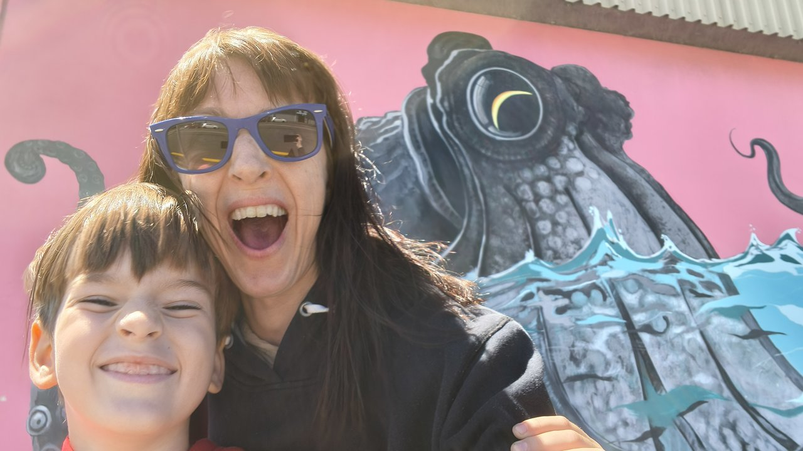
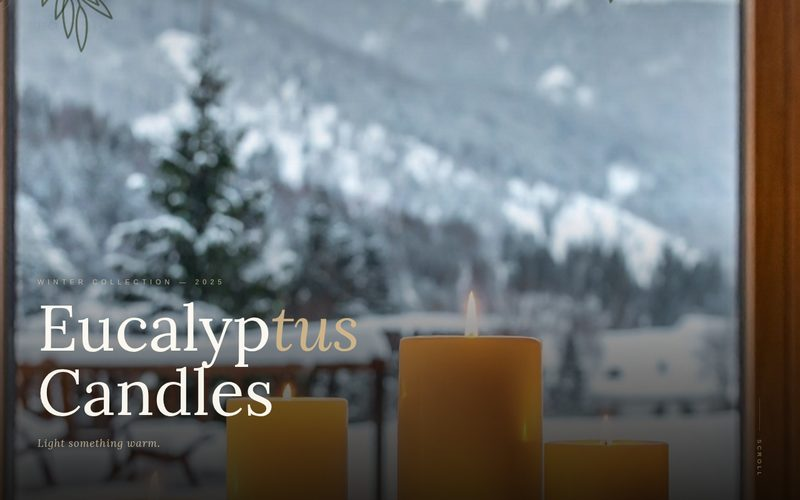
Street art found across Mexico, the Netherlands, New Zealand and beyond. The colour, the boldness, the stories on walls — this is what feeds the work.
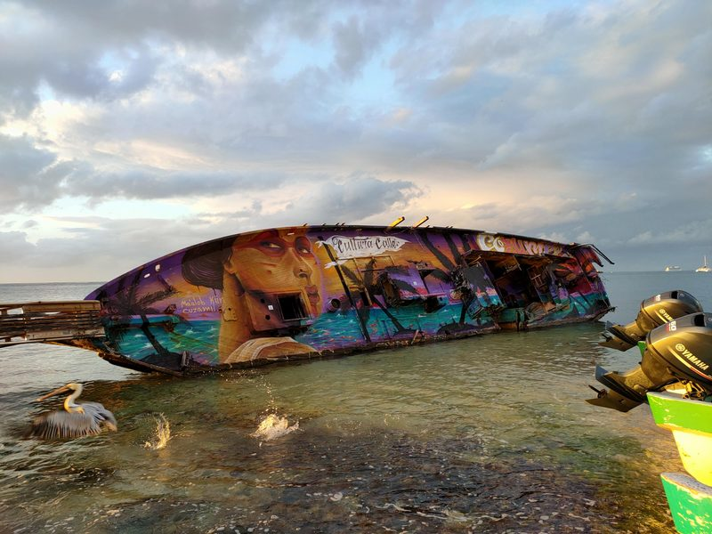
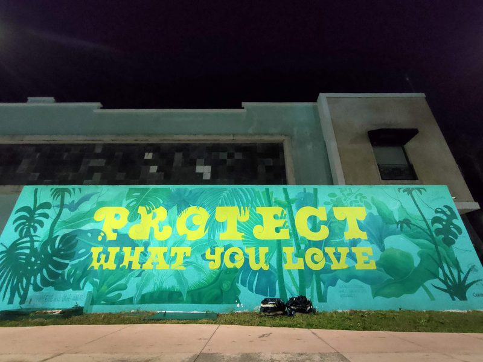
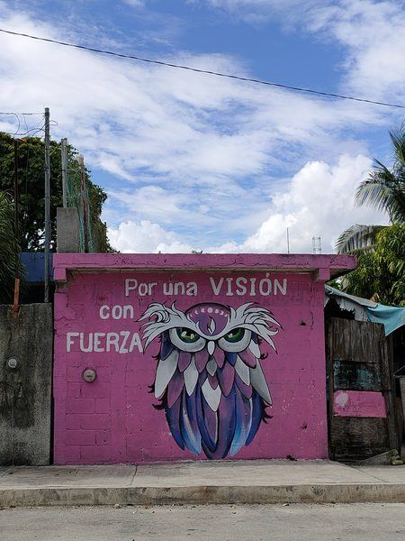
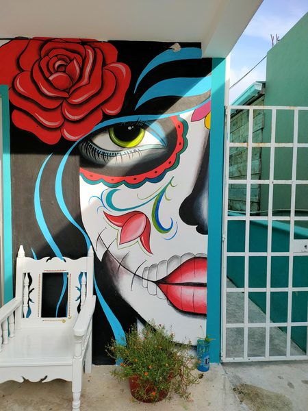
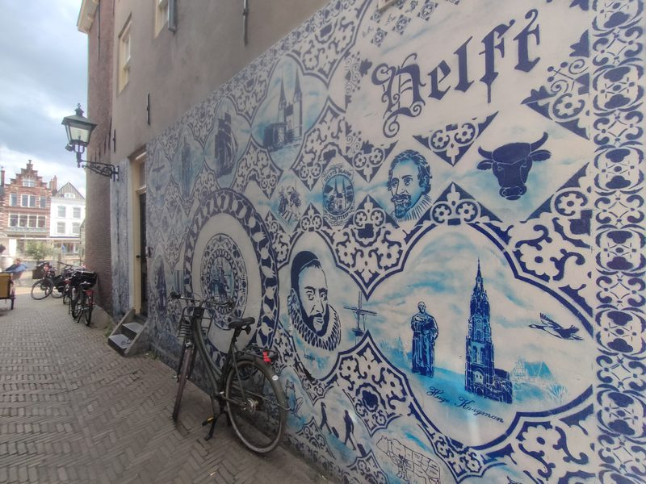
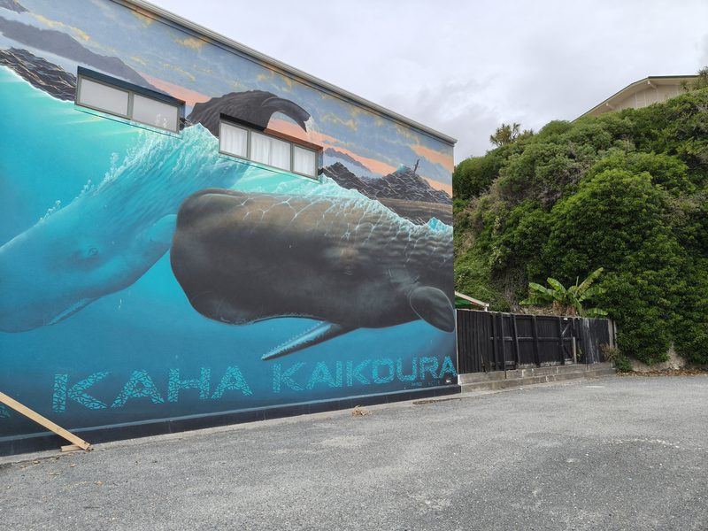
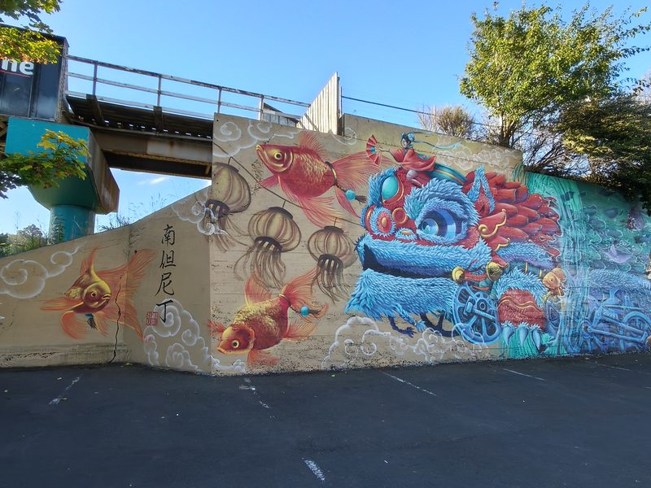
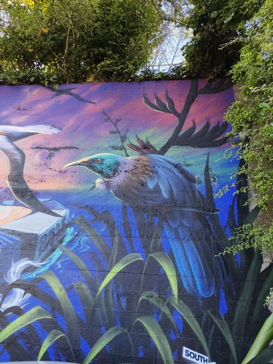
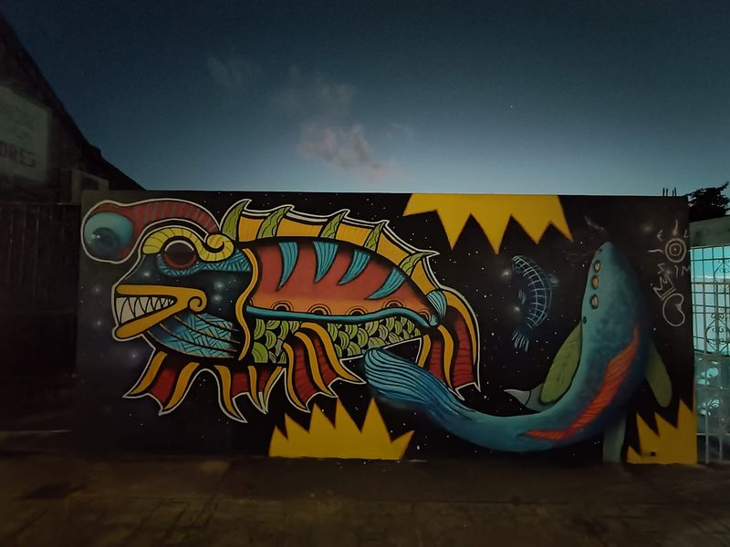
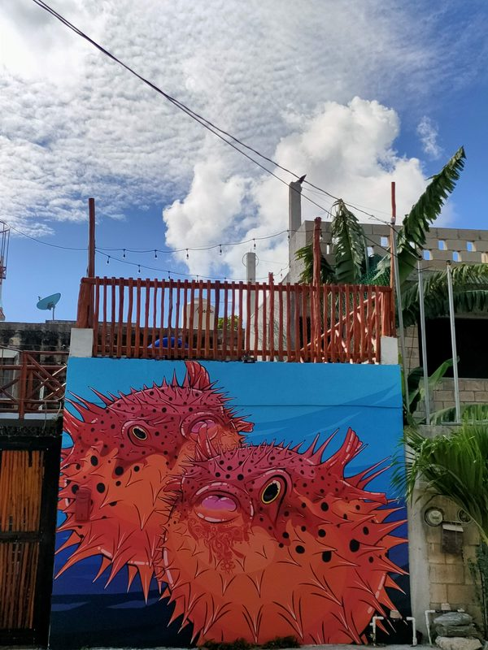
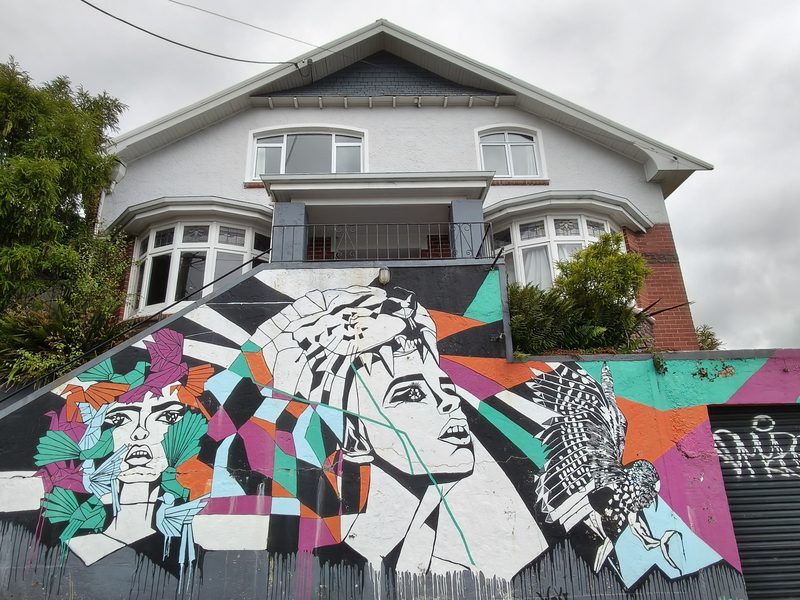
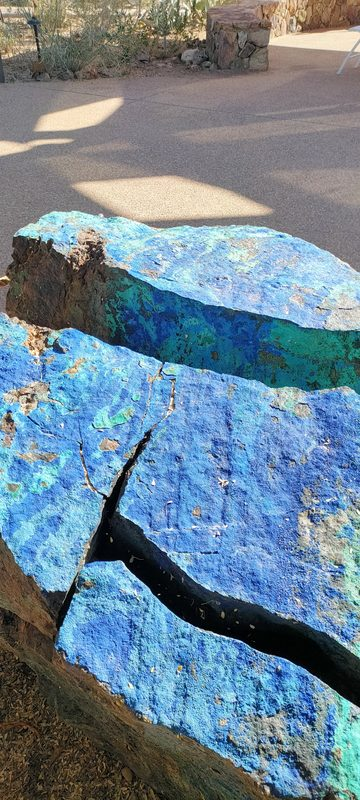
I am a teacher, UX designer, and front-end developer. I have always done everything alone — not by preference, but by circumstance. No co-founder, no dev team, no one handing me resources or saying let me help you with that.
What I had instead: years of skills built quietly across education, design, development, and product thinking — including the CalArts Web Design Certificate Program. Every project started with something I witnessed firsthand — a gap in a classroom, a learning tool that did not exist, a community of people being ignored by the products meant to serve them.
AI did not give me my skills. But it gave me something I had never had before — the ability to execute my own ideas, on my own timeline, without waiting on anyone. The ideas were always there. The infrastructure finally caught up.
I love street art, bold colour, Japanese culture, and design that feels like it was made by a real person with a real point of view. My roots are wide and layered — Native American, African, European, Oceanian — and that breadth shapes how I see the world and who I build for.
Everything you see here was designed, built, and shipped by one person.